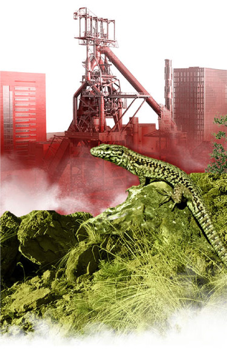
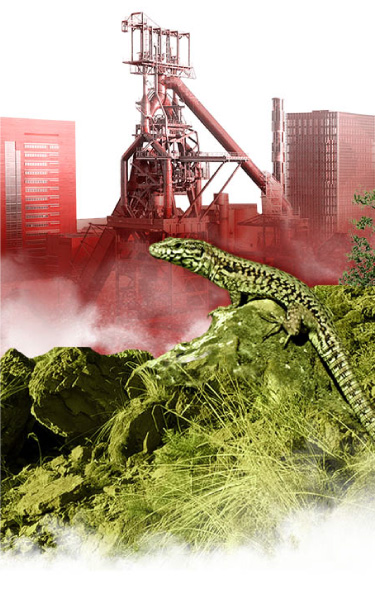

À propos de notre biosphère
Minett unesco biosphere
Promeut la conservation de la biodiversité et le développement durable basés sur la participation citoyenne, l’éducation et la recherche.

- Conservation: Nous contribuons à la conservation des paysages, des écosystèmes, des espèces et de la variation génétique.
- Développement: Nous encourageons un développement économique et humain durable des points de vue socioculturel et écologique.
- Appui logistique: Nous fournissons des moyens pour des projets et des activités d’éducation environnementales et de formation ; de recherche et de surveillance continue sur des problèmes locaux, régionaux, nationaux et mondiaux de conservation et de développement durable.
Minett unesco biosphere
A officiellement intégré le réseau mondial des réserves de biosphère du programme de l’unesco sur l’homme et la biosphère (mab).
Le XX octobre 2020, la région de la Minette est devenue une réserve de biosphère reconnue par l'Organisation des Nations Unies pour l'éducation, la science et la culture (UNESCO). Le Luxembourg participe donc désormais au programme scientifique MAB lancé dans les années 70. Il s’agit de promouvoir la conservation de la biodiversité et le développement durable basés sur la participation citoyenne, l’éducation et la recherche. Début 2020, les réserves de biosphère étaient au nombre de 701 répartis dans 124 pays. Grâce au réseau mondial, elles échangent et partagent leurs expériences et leur savoir-faire. Elles ont trois fonctions essentielles :
Plus d’informations
Plus d’informations
Le territoire d’apprentissage
Minett unesco biosphere
Est un territoire d’apprentissage pour le développement durable
Minett unesco biosphere
Est un territoire d’apprentissage pour le développement durable
Pour être internationalement reconnu comme réserve de biosphère, le territoire doit entre autres présenter des spécificités liées à l’activité de l’homme sur la nature. En effet, ce sont des sites où des pratiques sont testées et développées pour réduire l’impact de l’activité socioéconomique sur l’environnement et mener des actions collectives. La région en expérimentant de nouveaux modes de gestion territoriale peut ainsi établir une relation plus équilibrée ente l’Homme et la nature.
La région « Minett UNESCO Biosphere » permet d’étudier cet impact de l’homme sur la nature et le regain de la nature sur l’homme. Elle a été fortement influencée par l’activité industrielle de la fin du XXe siècle aux années 1990. L’extraction jusqu’à la fin des années 70, le traitement, puis l’abandon de l’exploitation du minerai de fer nommé « Minett » a laissé son empreinte dans le paysage. L’architecture, les friches sidérurgiques, les minières, l’immigration en sont des exemples éloquents. Aujourd’hui, ce territoire densément habité est riche d’une biodiversité retrouvée, d’une histoire patrimoniale à préserver et d’une rénovation urbaine importante.
La géographie
Minett unesco biosphere
Est une région post-industrielle connue pour sa diversité culturelle, l'originalité de son patrimoine et la renaturation de ses anciennes mines à ciel ouvert
le territoire de Minett unesco biosphere c’est …

-
11 communes :
Bettembourg, Differdange, Dudelange, Esch-sur-Alzette, Käerjeng, Kayl, Mondercange, Pétange, Rumelange, Sanem et Schiffange.
-
Une région frontalière avec la France et la Belgique.
-
Des espaces naturels protégés aux niveaux national et communautaire depuis les années 90.
-
Une gouvernance réunissant les élus et techniciens locaux, des instances étatiques, des associations locales, des acteurs socio-économiques et les scientifiques.
-
94 788 emplois offerts dont 51 % occupés par des travailleurs frontaliers.
-
Près de 7000 sièges sociaux.
-
Plus de 600 hectares de friches industrielles en cours de rénovation dans les centres urbains.
-
Une région urbaine, fière de son passé minier et sidérurgique en pleine mutation.
-
Près de 150 nationalités et de 45,23 % de résidents étrangers.
-
Une densité moyenne de 884 hab./km2.
-
Plus de 177 001 habitants (près du tiers de la population nationale).
-
Une superficie de 200 km2.
mais encore …
« Minett UNESCO Biosphere » est caractérisé par un paysage de Cuestas et offre une grande diversité de paysages et d’écosystèmes : Vergers, pelouses calcaires, prairies maigres de fauche, forêts alluviales ou de ravin, prairie humides du calthion abritent une faune et une flore importantes à conserver.
Les minières, ces paysages en terrasse entièrement créés par l’homme, caractérisent notre biosphère. Jadis, lieux intenses de l’activité industrielle, elles sont aujourd’hui le témoin que l’impact de l’homme sur la nature aussi peut être bénéfique. L’arrêt de l’activité dans les anciens sites miniers a influencé le développement des associations végétales et l’apparition d’une faune particulière (orchidées, papillon, chauve-souris, amphibiens, lézard, reptiles, oiseaux…). Cet environnement côtoie chaque jour une foule d’activité humaine qu’il convient de rendre plus durable sans l’étendre pour préserver les zones naturelles.
Plus d’informations
Minett unesco biosphere
A un zonage qui lui est propre pour assumer ses fonctions de réserve de biosphère
Toute réserve de biosphère doit comporter trois zones pour remplir ses fonctions.
Zones centrales
Elles visent à conserver d’importantes particularités et fonctions écologiques, où seules les activités de recherche ou de surveillance continue sont permises. Les 6 zones centrales de « Minett UNESCO Biosphere » représentent 19 hectares soit 10 % de la superficie de la région. Elles sont constituées exclusivement de sites d’anciennes mines à ciel ouvert classés en réserves naturelles ou zone NATURA 2000. Certaines sont directement adjacentes aux zones d’urbanisation. Il s’agit d’une caractéristique liée à l’héritage industriel : il fallait construire au plus près des mines de fer.
Zone de transition
Elle est composée des surfaces restantes dans laquelle se pratiquent les activités humaines. Caractérisée par une utilisation multiple des terres, elle est là où vivent et travaillent les populations humaines. La zone de transition s’étend sur 139 km2 soit 69 % de notre biosphère.
Zones tampons
Ce sont des espaces dans lesquels les usages pratiqués ne doivent pas perturber les zones protégées. Elles ont pour rôle de réduire au maximum les effets négatifs des activités humaines sur les zones centrales. Les 26 zones tampons définies dans notre biosphère sont constituées de toutes les autres réserves naturelles et zone NATURA 2000 autres que les anciennes mines à ciel ouvert. Elles représentent 42 hectares soit 21 % de la superficie régionale.
Plus d’informations
Les objectifs
Minett unesco biosphere
Un concept de développement régional durable
La réserve de biosphère a pour mission principale de développer un concept régional et une vision partagée de l’évolution territoriale de la réserve de biosphère.
Nous travaillons sur différents axes pour :
- Mettre en place un programme de recherche en coordination avec les partenaires scientifiques de la région ;
- favoriser l’éducation au développement durable des enfants du fondamental, la participation active des lycéens et citoyens ;
- valoriser et protéger le patrimoine industriel, naturel et culturel ;
- promouvoir le tourisme durable ;
- renforcer l’identité régionale et l’attractivité de la région.
Plus d’informations
Les acteurs
Minett unesco biosphere
Une génèse qui a rassemblé de multiples acteurs
L’idée de créer la première réserve de biosphère au Luxembourg est née en 2016, initiée par la Commission luxembourgeoise pour la coopération avec l’UNESCO. La région du Sud a tout de suite retenu l’attention pour ce label UNESCO car cet ancien bassin minier offre un cadre propice pour étudier les relations hommes-nature.
Après quelques années de discussions, de rencontres et d’échanges, le projet reçoit l’aval de nombreux intervenants politiques. Le projet se concrétise en 2018 lorsque le syndicat PRO-SUD décide à l’unanimité de ses membres de porter la candidature de ses onze communes au programme « L’Homme et la biosphère » (MAB) de l’UNESCO. Au même moment, il exprime sa volonté à coordonner la future réserve de biosphère. Le soutien sans faille des autorités nationales est venu officiellement compléter celui des communes. Cinq groupes de travail ont renforcé leurs activités ou ont vu le jour (Zoning, Rock Trail, Eise Stol, Produits du terroir, Biodiversité) et un comité d’experts a intensifié des échanges (Comité MAB devenu Comité scientifique).
Avec eux, PRO-SUD s’est organisé pour mener à son terme de dossier de candidature. L’engagement de chacun s’est illustré par des premières actions concrètes. Des réunions de consultations citoyennes ont été organisées dans chacune des onze communes rassemblant au total près de 500 personnes. Cette synergie a permis de finaliser rapidement le dossier de candidature déposé en septembre 2019.
Minett unesco biosphere
Un projet partagé
Le syndicat PRO-SUD est coordinateur de la réserve de biosphère. Mais les partenaires sont donc multiples. Ils y a ceux qui ont initié le projet de labellisation UNESCO, ceux qui ont cru au projet dès le départ, ceux qui contribuent financièrement à la réalisation de projets concrets et ceux qui nous ont rejoints au fur et à mesure.
Les partenaires de développement qui soutiennent ou qui sont impliqués dans la gestion de la réserve de biosphère sont :
Ministères :
- Énergie et aménagement du territoire,
- Culture,
- Environnement, climat et développement durable,
- Tourisme.
- Les onze administrations communales membre de pro-sud
- Syndicats intercommunaux
- Les commissions du conseil communal
- Commission luxembourgeoise pour la coopération avec l’unesco
- Administration de la nature et des forêts (anf)
- Administration de la gestion de l’eau (age)
- Syndicat intercommunal pour la conservation de la nature (sicona)
- Natur&ëmwelt a.s.b.l. emweltberodung lëtzebuerg a.s.b.l
- Musée national d’histoire naturelle instituts de recherche,
- Office régional du tourisme (ort)
- Animation culturelle du sud
- Industriekultur-cnci asbl (centre national de la culture industrielle)
- Fondation bassin minier
- Institutions culturelles (musées)
- Esch2022 capitale européenne de la culture les citoyens
- Cell center for ecological learning
- Transition minett
- Les écoles, lycées
- Université de luxembourg et centres de recherches
- Les clubs et associations
- Les mouvements de jeunesse et maison de jeunes
- Centre d’initiative et de gestion local (cigl)
- Les citoyens
- Chambre de commerce et chambre des métiers
- Artisans et agriculteurs
- Secteur privé et start-up
- Les citoyens